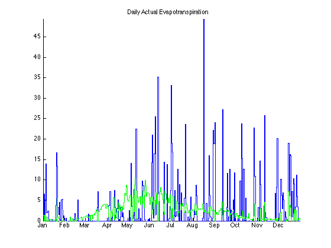
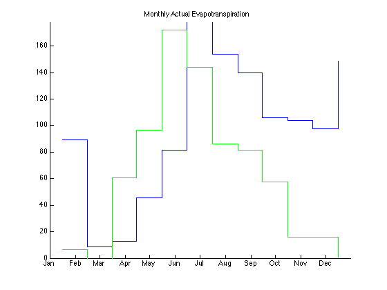
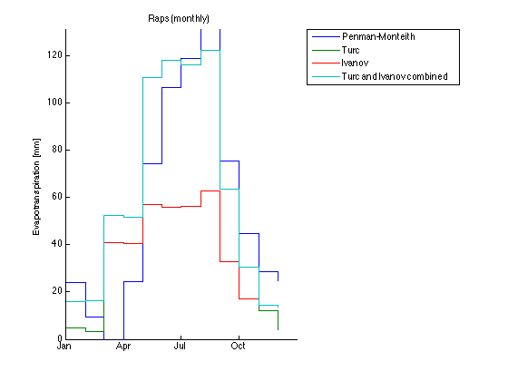

Measuring and Modelling Evapotranspiration
Authors: Debora Jäckel, Simon Roth, Gabriela Schär, Alexandra Schuler // Institute of Environmental Engineering, ETH Zurich // Labor II // Version: March 2013 // Last revision: 20. March 2013
Contents
Reset workspace
clear all close all
Import data
lysimeter.folder = 'data/2012/lysimeter/'; lysimeter.file = '2012_lysimeter_01.txt'; meteo.folder = 'data/2012/meteo/'; meteo.file = '2012_meteodata_data.txt'; % read data lysimeter.data = dlmread( [ lysimeter.folder lysimeter.file ] ); meteo.data = dlmread( [ meteo.folder meteo.file ], ';', 3, 1 ); % correct time shift lysimeter.data( :, 1 ) = datenum( num2str( lysimeter.data( :, 1 ) ), 'yyyymmddHH' ); meteo.data = [ nan( 1, size( meteo.data, 2 ) ); meteo.data ]; meteo.data = [ lysimeter.data( :, 1 ), meteo.data( 1:end-1, 2:end ) ];
Analysis specification
t = { '01.01.2012', '31.12.2012' }; % [dd.mm.yyyy]
plant = 'Raps';
cropFactor = 1.15; % [-]
Define constants
alpha = 0.23; % [-] latitude = 47+26/60; % [°] Gsc = 0.0820; % [MJ/m2 min] hGeo = 443; % [m] sigma = 4.903*10^-9; % [MJ/K4 m2 d]
Define vectors
% time time.h = lysimeter.data( :, 1 ); time.d = floor( dailyMean( time.h ) ); time.m = datevec( floor( monthlyMean( time.h, time.h ) ) ); time.m = datenum( time.m )-time.m( :, 3 )+1; time.y = year( mean( time.h ) ); % storage [mm] storage.h = gradient( lysimeter.data( :, 4 ) ); storage.d = dailySum( storage.h ); storage.m = monthlySum( storage.h, time.h ); % percolation [mm] percol.h = lysimeter.data( :, 5 ); percol.d = dailySum( percol.h ); percol.m = monthlySum( percol.h, time.h ); % solar radiation [W/m2] Rs.h = meteo.data( :, 5 ); Rs.d = dailyMean( Rs.h ); Rs.m = monthlyMean( Rs.h, time.h ); % pressure [hPa] press.h = meteo.data( :, 6 ); press.d = dailyMean( press.h ); press.m = monthlyMean( press.h, time.h ); % air temperature [°C] Tair.h = meteo.data( :, 7 ); Tair.dMax = dailyMax( Tair.h ); Tair.dMin = dailyMin( Tair.h ); Tair.d = ( Tair.dMax+Tair.dMin )/2; Tair.mMax = monthlyMean( Tair.dMax, time.d ); Tair.mMin = monthlyMean( Tair.dMin, time.d ); Tair.m = ( Tair.mMax+Tair.mMin )/2; % precipitation [mm] percip.h = meteo.data( :, 9 ); percip.d = dailySum( percip.h ); percip.m = monthlySum( percip.h, time.h ); % relative humidity [%] RH.h = meteo.data( :, 10 ); RH.d = dailyMean( RH.h ); RH.m = monthlyMean( RH.h, time.h ); % wind speed [m/s] windSp.h = meteo.data( :, 12 ); windSp.d = dailyMean( windSp.h ); windSp.m = monthlyMean( windSp.h, time.h ); clear lysimeter meteo % mean saturation vapour pressure [kPa] es.d = ( satVapPressure( Tair.dMax )+satVapPressure( Tair.dMin ) )/2; es.m = ( satVapPressure( Tair.mMax )+satVapPressure( Tair.mMin ) )/2;
Compute evapotranspiration
% actual evapotranspiration [mm] AET.h = percip.h-percol.h-storage.h; AET.d = percip.d-percol.d-storage.d; AET.m = percip.m-percol.m-storage.m; % Penman-Monteith [mm] penMonPET.d = penmanMonteith( es.d, Tair.d, RH.d, alpha, Rs.d, time.d, latitude, Gsc, hGeo, sigma, Tair.dMax, Tair.dMin, press.d, windSp.d )*cropFactor; penMonPET.m = penmanMonteith( es.m, Tair.m, RH.m, alpha, Rs.m, time.m, latitude, Gsc, hGeo, sigma, Tair.mMax, Tair.mMin, press.m, windSp.m )*cropFactor.*eomday( time.y, 1:12)'; % Turc [mm] turcPET.d = turc( RH.d, Rs.d, Tair.d )*cropFactor; turcPET.m = turc( RH.m, Rs.m, Tair.m )*cropFactor.*eomday( time.y, 1:12)'; % Ivanov [mm] ivanovPET = ivanov( Tair, RH, cropFactor ); % Turc and Ivanov combined [mm] turcIvanovPET.d = [ ivanovPET.d( 1:sum( eomday( time.y, 1:2 ) ) ); turcPET.d( sum( eomday( time.y, 1:2 ) )+1:sum( eomday( time.y, 1:10 ) ) ); ivanovPET.d( sum( eomday( time.y, 1:10 ) )+1:sum( eomday( time.y, 1:12 ) ) ) ]; turcIvanovPET.m = [ ivanovPET.m( 1:2 ); turcPET.m( 3:10 ); ivanovPET.m( 11:12 ) ];
Figures
Instruction: niceFigure( time vector, [ all data vectors separated by commas ], { all labels for the data vector as strings separated by commas }, the period, the titel of the plot )
niceFigure( time.d, [ AET.d, penMonPET.d ], { 'AET', 'Penman-Monteith' }, t, [ plant ' (daily)' ] )
niceFigure( time.m, [ AET.m, penMonPET.m ], { 'AET', 'Penman-Monteith' }, t, [ plant ' (monthly)' ] )
niceFigure( time.d, [ penMonPET.d, turcPET.d, ivanovPET.d, turcIvanovPET.d ], { 'Penman-Monteith', 'Turc', 'Ivanov', 'Turc and Ivanov combined' }, t, [ plant ' (daily)' ] )
niceFigure( time.m, [ penMonPET.m, turcPET.m, ivanovPET.m, turcIvanovPET.m ], { 'Penman-Monteith', 'Turc', 'Ivanov', 'Turc and Ivanov combined' }, t, [ plant ' (monthly)' ] )
   Free memory
clear all